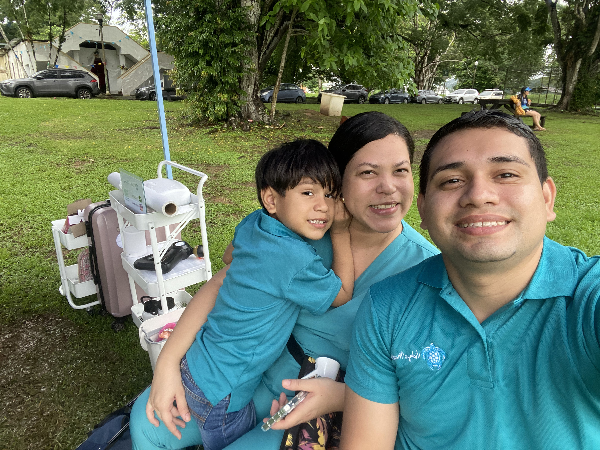

My name is Victor Elias Murillo Carrasco, I'm from Panama City, Panama. I am a father of two boys. I like spending time with my boys and beautiful wife. I'm 28 years old and I'm pursuiting my dream to be a great software developer from BYU-Pathway.
Where am I?
I am from Panama, a country located in Central America, known for its iconic Panama Canal that connects the Atlantic and Pacific Oceans. Panama is proud of its rich cultural heritage, with a mix of native, Afro-descendant, and European influences seen in its art, music, cuisine, and traditions.